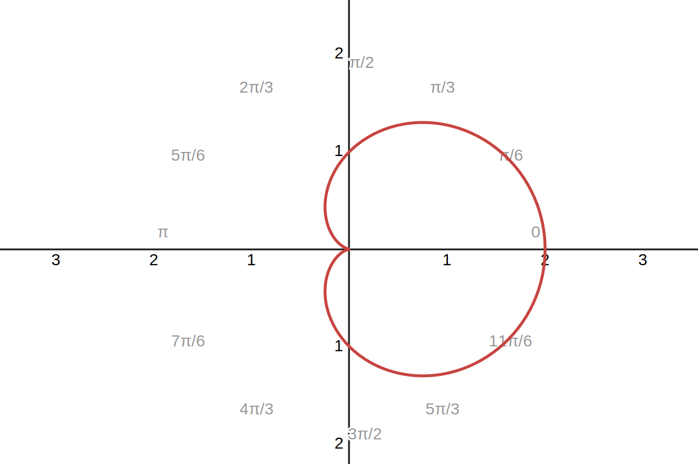

Problem. 心形线面积 [心形线面积][edit]
Problem. 心形线面积 [心形线面积][edit]
$\gdef\spaces#1{~ #1 ~}$ $\gdef\d{\operatorname{d}}$
求由心形线 $r = a(1+\cos \theta)$, $a>0$ 所围区域的面积

如图, 我们先计算 $y>0$ 的部分, 由 曲边扇形面积 可知其面积 $S$ 为
$$ \begin{aligned} S &\spaces= \int_0^\pi a^2(1+\cos\theta)^2 \d \theta \\ &\spaces= a^2 \int_0^\pi \Big(2\cos^2\frac{\theta}2\Big)^2 \d \theta \\ &\spaces= 4a^2 \int_0^\pi \cos^4\frac{\theta}2 \d \theta \\ &\spaces= 8a^2 \int_0^{\frac\pi2} \cos^4 t \d t \\ &\spaces= \frac{3\pi a^2}{2} \end{aligned} $$
最后使用了 Wallis 积分公式, $W_4 = \frac{3!!}{4!!} \cdot \frac\pi2 = \frac{3\pi}{16}$. 故区域面积为 $3\pi a^2$.